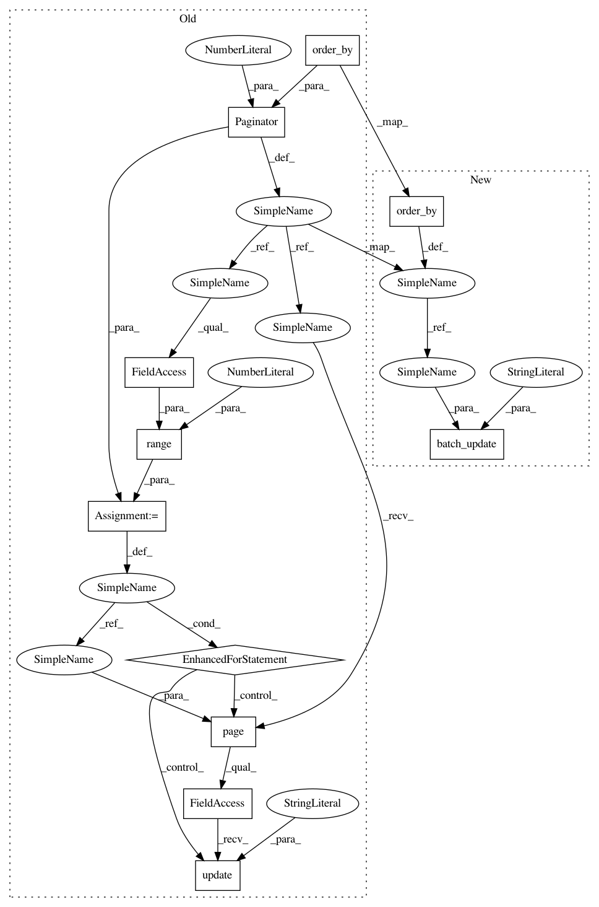

2f7d0c6e6a55c663c23b174b3ee28cf5a2e33c4d,common/data_refinery_common/migrations/0038_paginate_default_svd_algorithm.py,,set_dataset_svd_algorithm_none,#Any#Any#,18
Before Change
def set_dataset_svd_algorithm_none(apps, schema_editor):
Apply default svd_algorithm via pagination to dataset
Dataset = apps.get_model("data_refinery_common", "Dataset")
paginator = Paginator(Dataset.objects.all().order_by("id"), 1000)
for page_idx in range(1, paginator.num_pages):
paginator.page(page_idx).object_list.update(svd_algorithm="NONE")
class Migration(migrations.Migration):
dependencies = [
("data_refinery_common", "0037_auto_20190925_1309"),
After Change
def set_dataset_svd_algorithm_none(apps, schema_editor):
Apply default svd_algorithm via pagination to dataset
Dataset = apps.get_model("data_refinery_common", "Dataset")
queryset = Dataset.objects.all().order_by("id")
batch_update(queryset, svd_algorithm="NONE")
class Migration(migrations.Migration):
dependencies = [
In pattern: SUPERPATTERN
Frequency: 3
Non-data size: 11
Instances
Project Name: AlexsLemonade/refinebio
Commit Name: 2f7d0c6e6a55c663c23b174b3ee28cf5a2e33c4d
Time: 2019-09-25
Author: davidsmejia@gmail.com
File Name: common/data_refinery_common/migrations/0038_paginate_default_svd_algorithm.py
Class Name:
Method Name: set_dataset_svd_algorithm_none
Project Name: AlexsLemonade/refinebio
Commit Name: 2f7d0c6e6a55c663c23b174b3ee28cf5a2e33c4d
Time: 2019-09-25
Author: davidsmejia@gmail.com
File Name: common/data_refinery_common/migrations/0038_paginate_default_svd_algorithm.py
Class Name:
Method Name: set_computed_file_svd_algorithm_none
Project Name: AlexsLemonade/refinebio
Commit Name: 2f7d0c6e6a55c663c23b174b3ee28cf5a2e33c4d
Time: 2019-09-25
Author: davidsmejia@gmail.com
File Name: common/data_refinery_common/migrations/0038_paginate_default_svd_algorithm.py
Class Name:
Method Name: set_computed_file_svd_algorithm_arpack